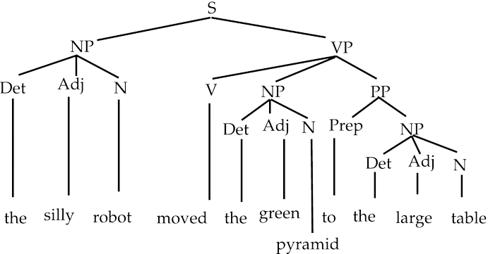

Natural Language Processing
Le natural language processing (NLP), c'est quoi ?
Le natural language processing (NLP), ou traitement du langage naturel, est une branche de l’intelligence artificielle qui s’attache à comprendre le langage humain tel qu’il est écrit et/ou parlé. Pour ce faire, des programmes informatiques spécifiques sont développés.
En effet, un ordinateur typique réclame qu’on lui parle dans un langage de programmation bien précis, balisé, structuré, sans ambiguïté. Le langage naturel humain est, lui, imprécis, équivoque, confus. Pour permettre à un programme de comprendre le sens des mots, il faut employer des algorithmes capables d’analyser le sens et la structure pour "désambiguïser" les mots, de reconnaître certaines références, puis de générer du langage sur cette base.
À quelles problématiques répond le NLP ?
Le NLP est terme assez générique qui recouvre un champ d’application très vaste. Voici les applications les plus populaires :
Traduction automatique
Le développement d’algorithmes de traduction automatique a réellement révolutionné la manière dont les textes sont traduits aujourd’hui. Des applications, telles que Google Translator, sont capables de traduire des textes entiers sans aucune intervention humaine.Le langage naturel étant par nature ambigu et variable, ces applications ne reposent pas sur un travail de remplacement mot à mot, mais nécessitent une véritable analyse et modélisation de texte, connue sous le nom de Traduction automatique statistique (Statistical Machine Translation en anglais).
Sentiment analysis
Aussi connue sous le nom de « Opinion Mining », l’analyse des sentiments consiste à identifier les informations subjectives d’un texte pour extraire l’opinion de l’auteur.
De manière générale, l’analyse des sentiments permet de mesurer le niveau de satisfaction des clients vis-à-vis des produits ou services fournis par une entreprise ou un organisme. Elle peut même s’avérer bien plus efficace que des méthodes classiques comme les sondages.
En effet, si l’on rechigne souvent à passer du temps à compléter de longs questionnaires, une partie croissante des consommateurs partage aujourd’hui fréquemment leurs opinions sur les réseaux sociaux. Ainsi, la recherche de textes négatifs et l’identification des principales plaintes permettent d’améliorer les produits, d’adapter la publicité et de réduire le niveau d’insatisfaction des clients.
Marketing
Ils s’appuient pour cela sur le comportement des internautes sur les sites, les réseaux sociaux et les requêtes aux moteurs de recherche. C’est grâce à ce type d’analyse que Google génère un profit non négligeable en proposant la bonne publicité aux bons internautes. Chaque fois qu’un visiteur clique sur une annonce, l’annonceur reverse jusqu’à 50 dollars !
Les sources de données brutes pour cette analyse comprennent les journaux de ventes, les enquêtes et les médias sociaux …
Chatbots
Les méthodes NLP sont au cœur du fonctionnement des Chatbots actuels. Bien que ces systèmes ne soient pas totalement parfaits, ils peuvent aujourd’hui facilement gérer des tâches standards telles renseigner des clients sur des produits ou services, répondre à leurs questions, etc. Ils sont utilisés par plusieurs canaux, dont l’Internet, les applications et les plateformes de messagerie. L’ouverture de la plateforme Facebook Messenger aux chatbots en 2016 a contribué à leur développement.
Autres domaines d’application
- Classification de texte
- Reconnaissance de caractères
- Correction automatique
- Résumé automatique
Quelles sont les différentes techniques de natural language processing (NLP) ?
Les algorithmes de NLP pratiquent différentes analyses syntaxiques et sémantiques, pour évaluer le sens d’une phrase en fonction de règles grammaticales fournies au préalable, en opérant une segmentation des mots et des groupes de mots ou en étudiant la grammaire d’une phrase complète. Pour déterminer le sens et le contexte, ils comparent en temps réel le texte avec toutes les bases de données dont ils disposent. Ayant besoin de quantités importantes de data (étiquetées) pour identifier les corrélations pertinentes, ils ont recours aux techniques modernes d’apprentissage du machine learning ou du deep learning. Diverses techniques sont employées par ces algorithmes telles que la reconnaissance des entités nommées (noms de personnes, lieux...), l’analyse des sentiments (positif, négatif, neutre), la synthèse de texte, l’extraction d’aspects (ciblage de l’intention du texte), et la modélisation de sujets.
Quels sont les principaux modèles de NLP ?
Si le traitement du langage naturel existe depuis longtemps, les progrès réalisés récemment sont considérables avec une multiplication des programmes de NLP, surtout chez les géants du numérique. Parmi les modèles les plus en pointe, on peut citer :
- les modèles BERT et ALBERT de Google AI qui servent en quelque sorte de référence pour les performances
- les modèles dérivés et améliorés comme RoBERTa (Facebook), StructBERT (Alibaba), DeBERTa (Microsoft), DistilBERT (Hugging Face)
- les modèles alternatifs comme GPT-2 et GPT-3 (OpenAI), XLNet (Université Carnegie Mellon), UniLM (Microsoft), et Reformer (Google).
Quels sont les perspectives et enjeux du NLP ?
Les règles qui régissent la transformation de texte en langage naturel en information ne sont pas faciles à comprendre pour les ordinateurs.
Parmi les principaux challenges :
Ambiguïté
En langage naturel, les mots sont uniques mais peuvent avoir des significations différentes selon le contexte, ce qui entraîne une ambiguïté au niveau lexical, syntaxique et sémantique. Pour résoudre ce problème, le NPL propose plusieurs méthodes, telles que l’évaluation du contexte par exemple. Cependant, la compréhension de la signification sémantique des mots d’une phrase reste une tâche en cours de recherche.
Synonymie
Un autre phénomène clé en langage naturel est le fait que nous pouvons exprimer la même idée avec différents termes qui dépendent également du contexte spécifique.
Par exemple, les termes « grand » et « large » peuvent être synonymes pour décrire un objet ou un bâtiment, mais ils ne sont pas interchangeables dans tous les contextes : « grand » peut signifier plus âgé.
Coréférence
Les tâches de coréférence consistent à trouver toutes les expressions qui se réfèrent à la même entité. Il s’agit d’une étape importante pour de nombreuses tâches de NLP de haut niveau qui impliquent une compréhension du texte dans sa globalité, telles que le résumé de documents, la réponse à des questions et l’extraction d’informations. Ce problème a connu un renouveau avec l’introduction de techniques de pointe de Deep Learning .
Style d’écriture
Selon la personnalité de l’auteur, ses intentions et émotions, une même idée peut être exprimée de diverses manières.
Ainsi, alors que les humains peuvent facilement maîtriser une langue, l’ambiguïté et les caractéristiques imprécises des langues naturelles sont ce qui rend la NLP difficile à mettre en œuvre pour les machines.
Vous souhaitez passer maître dans l’art du NLP ? La suite de notre dossier arrive vite ! Au programme du prochain épisode : comment représenter un mot par un vecteur grâce au Word Embedding ?
Ressources:
- Freecodecamp
- Artificial Intelligence - All in One
- Stanford University videos
- NLTK documentation
- Geeksforgeeks
- JavaPoint
- SpaCy documentation